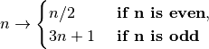

Longest Collatz sequence¶
Problem 14
The following iterative sequence is defined for the set of positive integers:

Using the rule above and starting with 13, we generate the following sequence:
13 → 40 → 20 → 10 → 5 → 16 → 8 → 4 → 2 → 1
It can be seen that this sequence (starting at 13 and finishing at 1) contains 10 terms. Although it has not been proved yet (Collatz Problem), it is thought that all starting numbers finish at 1.
Which starting number, under one million, produces the longest chain?
NOTE: Once the chain starts the terms are allowed to go above one million.
Solution
-
euler14.syracuse(n)¶ -
The essential Syracuse function. Returns: next value in the chain after n
def syracuse( n ):
"""The sequence rules.
>>> from euler14 import syracuse
>>> syracuse(13)
40
>>> syracuse(40)
20
"""
if n % 2 == 0:
return n // 2
else:
return 3*n + 1
-
euler14.syracuse2(n)¶ -
The essential Syracuse function. Returns: next value in the chain after n This has about the same performance as
syracuse().
def syracuse2( n ):
"""The sequence rules.
>>> from euler14 import syracuse2
>>> syracuse2(13)
40
>>> syracuse2(40)
20
"""
return n // 2 if n % 2 == 0 else 3*n + 1
Apply a function to create a chain of values.
This will work with any integer function,
we can use syracuse() or syracuse2().
def function_chain_gen( n, function=syracuse2 ):
"""
>>> from euler14 import function_chain_gen
>>> cg= function_chain_gen(13)
>>> [next(cg) for i in range(10)]
[13, 40, 20, 10, 5, 16, 8, 4, 2, 1]
"""
while True:
yield n
n= function(n)
Apply a function chain until we get to a previously known value.
known = { }
def seqToLoopOrKnown( n, function=syracuse2 ):
"""Follow a function chain until it reaches a previous seen value.
Returns the length of the sequence.
>>> from euler14 import seqToLoopOrKnown
>>> seq13_len= seqToLoopOrKnown(13)
>>> seq13_len
10
"""
global known
seq= list()
for r in function_chain_gen(n,function):
if r in seq:
known[n]= len(seq)
break
if r in known:
known[n]= known[r] + len(seq)
break
seq.append(r)
return known[n]
Apply a function chain until we get to 1.
def seqTo1_iter( n, function=syracuse2 ):
"""Follow a function chain until it reaches 1.
Yields each value of the sequence.
>>> from euler14 import seqTo1_iter
>>> seq13= list(seqTo1_iter(13))
>>> len(seq13)
10
>>> seq13
[13, 40, 20, 10, 5, 16, 8, 4, 2, 1]
"""
for r in function_chain_gen(n,function):
yield r
if r == 1: break
Test module components.
def test():
import doctest
doctest.testmod(verbose=0)
Compute the longest Collatz sequence from numbers to 1,000,000.
def answer():
maxSeqLen, maxSeqN = max( (seqToLoopOrKnown(i),i) for i in range(0,1000000) )
return maxSeqN
Confirm the answer.
def confirm(ans):
assert ans == 837799, "{0!r} Incorrect".format(ans)
Compare performance of syracuse() and syracuse2().
def compare_timing():
import timeit
s= timeit.timeit( "list(seqTo1_iter(13,syracuse))", "from euler14 import seqTo1_iter, syracuse" )
print( "syracuse", s )
s2= timeit.timeit( "list(seqTo1_iter(13,syracuse2))", "from euler14 import seqTo1_iter, syracuse2" )
print( "syracuse2", s2 )
Create some output.
if __name__ == "__main__":
test()
ans= answer()
confirm(ans)
print( "The starting number, under one million, produces the longest chain:", ans )
#compare_timing()